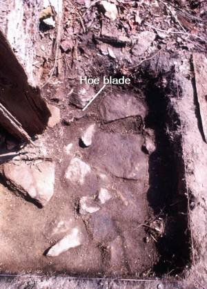

It is helpful to find iron objects on historic sites. The distribution of corroded nails in the soil might indicate the presence and layout of buildings. Common objects made of iron—such as stoves, cookware, and tools—can reveal where past occupants carried out everyday activities. Iron objects are occasionally found in unexpected locations where they appear to have been intentionally placed, and suggest less common, or ritual activities.
Openings in a building such as doors, windows, and chimneys offer a route into private spaces and may be vulnerable to unwanted intruders and uninvited guests. A variety of objects have been and are used by people all over the world to mark the margins between inside and out and may be seen as charms or expression of ritual life or belief. Many of these objects are iron. Archaeologists at the Molly Berry Site in Prince George’s County found horseshoes beneath the windows of the cabin, for example.
|  |
The Indian Rest Site in Calvert County yielded a number of iron artifacts in such locations. Indian Rest is a nineteenth-century log cabin site that was excavated over a number of years by volunteers working with archaeologists from Jefferson Patterson Park & Museum and Calvert County Government. The dwelling there was occupied from at least the 1870s until 1934 by a succession of African American families. It has been vacant since then
A small cache of objects was found near the surface by the eastern doorpost of the main entrance to the house. It consisted of nails, a button, peach pits, beads, mica, and a fragment of a tractor headlamp bearing the trademark ‘Ford’. Together these bear similarities to minkisi and may represent the work of someone placing the items as a blessing, a curse, or an attempt to make someone do something. The objects were probably originally in a bag or bundle, the organic remains of which have deteriorated in the soil. |
About 18” beneath the items in that cache, at the base of the fieldstone foundation, we found a forged iron hoe blade partially under one of the stones that make up the foundation of the cabin. The blade was corroded but otherwise intact. Why would someone bury a serviceable tool like a hoe blade in the builder’s trench of the cabin in the 19th century? The answer maybe that the iron itself was significant.
Metalwork and specifically ironwork was valued in areas of Africa from which many enslaved people were brought into the Chesapeake. Iron was associated with Ogun, an orisha or vodun, whom believers invoked to intervene in human affairs. The use of iron continued in the west, perhaps with new influences. A contemporary practitioner of vodou in New Orleans, upon hearing about the finds at Indian Rest and examining illustrations of the unit in plan and in profile, offered an insight about the two deposits: she said “whoever put the toby [the cache] that was found near the top didn’t know about the hoe blade at the bottom or they wouldn’t have bothered.” That suggests that the deposits were made by different people at different times. She added that she didn’t know of a special significance attached to the form of the hoe but noted that to open her ceremonies, the officiant would strike a plowshare with an iron spike. She said that act is called “playing the hoe.”
The builders of the cabin may have placed the hoe blade under the foundation at the time of construction to summon Ogun to protect the dwelling.
There are other reports of iron hoes with seeming ritual use on archaeological sites; for example, a hoe blade was found between the floors of a house in New Jersey, near a chimney.
Near the chimney at Indian Rest was a collection of items that included an iron spoked wheel probably from a child’s toy and threads indicating that it was buried with red cloth, which supports interpreting it as a cache. Not only was it near the chimney—a common site for concealed objects—but red fabric was often used by people of African descent to create amulets, according to persons interviewed and cited in WPA interviews.
|
 |
The objects mentioned above are but a few of the kinds that people have used and still employ as markers between spaces. Diverse examples include a mezuzah on the doorframe of a Jewish household, and a horseshoe above the doorway or fireplace in a Midwestern American home. Can you think of others?
Kirsti Uunila, RPA,
Calvert County Government